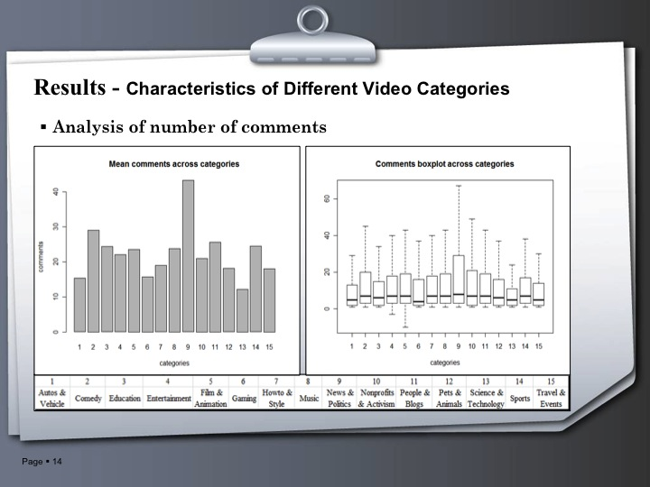
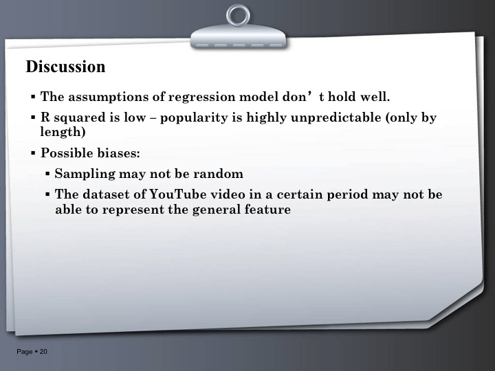

SI544: Introduction to Statistics and Data Analysis
This is a group project studying the factors that contribute to a video's successfulness on YouTube.
Our conclusions are as follows:
Different video categories are significantly not identical in terms of video length, number of views and comments.
The popularity of videos is difficult to predict, especially only with length
However, people may have the expectation that good music videos should have proper length (roughly 4-6 minutes, the typical length of songs)

